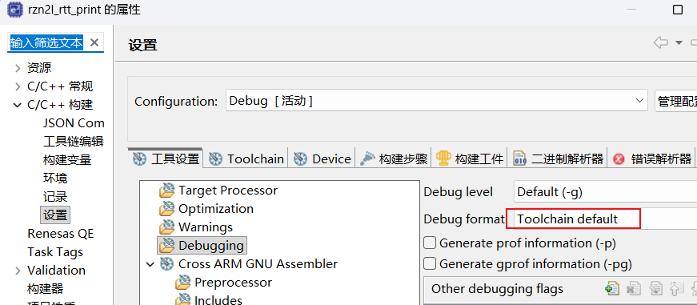
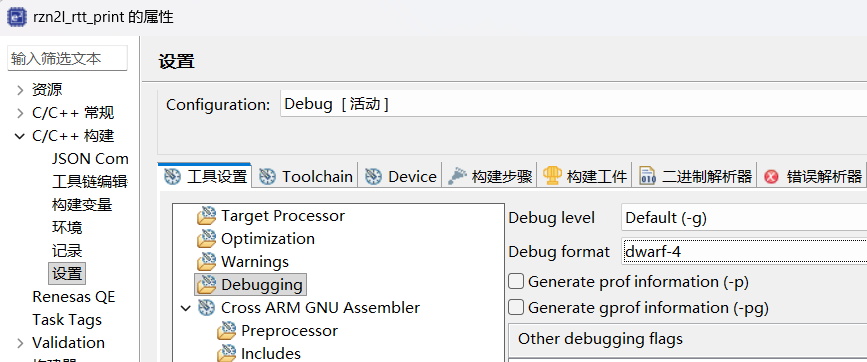

使用GCC 13.3编译器调试RZN2L程序时，发现断点位置异常：
| ELF文件 | DWARF版本 | 调试状态 |
|---|---|---|
rzn2l_rtt_print - dwarf4.elf |
DWARF-4 | ✅ 断点正常 |
rzn2l_rtt_print - gcc13.3 default.elf |
DWARF-5 | ❌ 断点乱套 |
关键现象：同一个工程、同一份代码，仅改变调试信息格式，断点行为完全不同。
使用arm-none-eabi-readelf工具验证：
# 检查dwarf4.elf
arm-none-eabi-readelf --debug-dump=info "rzn2l_rtt_print - dwarf4.elf" | Select-String "Version:"
# 输出: Version: 4
# 检查default.elf
arm-none-eabi-readelf --debug-dump=info "rzn2l_rtt_print - gcc13.3 default.elf" | Select-String "Version:"
# 输出: Version: 5
# dwarf4.elf编译选项（从ELF中提取）
GNU C99 13.3.1 20240614 -mcpu=cortex-r52 -mthumb -g -gdwarf-4 -Og
# default.elf编译选项
GNU C99 13.3.1 20240614 -mcpu=cortex-r52 -mthumb -g -Og
差异：dwarf4.elf显式指定了-gdwarf-4，default.elf使用默认格式。
GCC各版本默认DWARF格式：
| GCC版本 | 默认DWARF格式 |
|---|---|
| GCC 4.x | DWARF-2 |
| GCC 5.x - 9.x | DWARF-4 |
| GCC 10+ | DWARF-5 |
GCC 13.3的默认调试格式是DWARF-5。
DWARF-5相比DWARF-4的主要变化：
| 变化项 | DWARF-4 | DWARF-5 |
|---|---|---|
| 编译单元头 | 固定格式 | 新增DW_UT_compile单元类型 |
| 行号表 | 标准格式 | 新增LNCT条目类型 |
| 字符串表 | .debug_str |
新增.debug_line_str |
| 地址表 | 内联在DIE中 | 独立.debug_addr节 |
核心问题：J-Link调试器对DWARF-5支持不完善
| 组件 | 版本 | DWARF-5支持 |
|---|---|---|
| J-Link固件 | OB-S124 (Dec 10 2025) | 部分支持 |
| J-Link DLL | V8.60 | 部分支持 |
| GDB | 14.2.90 | 支持 |
问题表现：
ARMv8-R架构的调试特性：
Cortex-R52的调试模型与Cortex-M不同，DWARF-5在某些ARM核心上存在兼容性问题。
修改.cproject文件中的调试格式配置：


<!-- 修改前 -->
<option id="ilg.gnuarmeclipse.managedbuild.cross.option.debugging.format.1189130885"
name="Debug format"
superClass="ilg.gnuarmeclipse.managedbuild.cross.option.debugging.format"
value="ilg.gnuarmeclipse.managedbuild.cross.option.debugging.format.default"
valueType="enumerated"/>
<!-- 修改后 -->
<option id="ilg.gnuarmeclipse.managedbuild.cross.option.debugging.format.1189130885"
name="Debug format"
superClass="ilg.gnuarmeclipse.managedbuild.cross.option.debugging.format"
value="ilg.gnuarmeclipse.managedbuild.cross.option.debugging.format.dwarf4"
valueType="enumerated"/>
在编译器选项中添加：
-gdwarf-4
或在Makefile中：
CFLAGS += -gdwarf-4
# 清理并重新编译
make clean
make all
arm-none-eabi-readelf --debug-dump=info rzn2l_rtt_print.elf | Select-String "Version:"
# 应输出: Version: 4
1、在e2studio中加载新的ELF文件
2、在关键函数设置断点
3、运行程序，验证断点位置是否正确
| 项目 | 说明 |
|---|---|
| 问题类型 | 软件兼容性问题 |
| 根本原因 | J-Link对DWARF-5格式支持不完善 |
| 影响范围 | GCC 10+编译器 + J-Link调试器 |
| 推荐方案 | 强制使用DWARF-4格式（-gdwarf-4） |
| 验证方法 | arm-none-eabi-readelf --debug-dump=info |
核心要点：
1、GCC 13.3默认使用DWARF-5调试格式
2、e2studio2025-12 FSP2.0修改了Debug format：Toolchain default
3、强制使用DWARF-4格式可解决断点异常问题